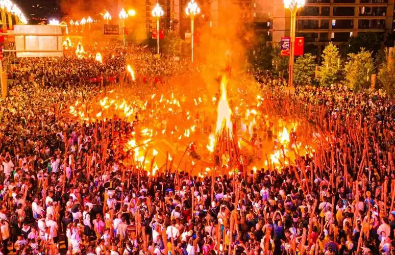
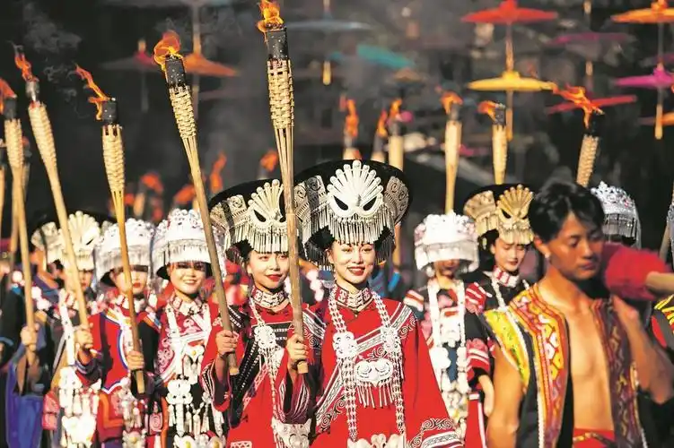
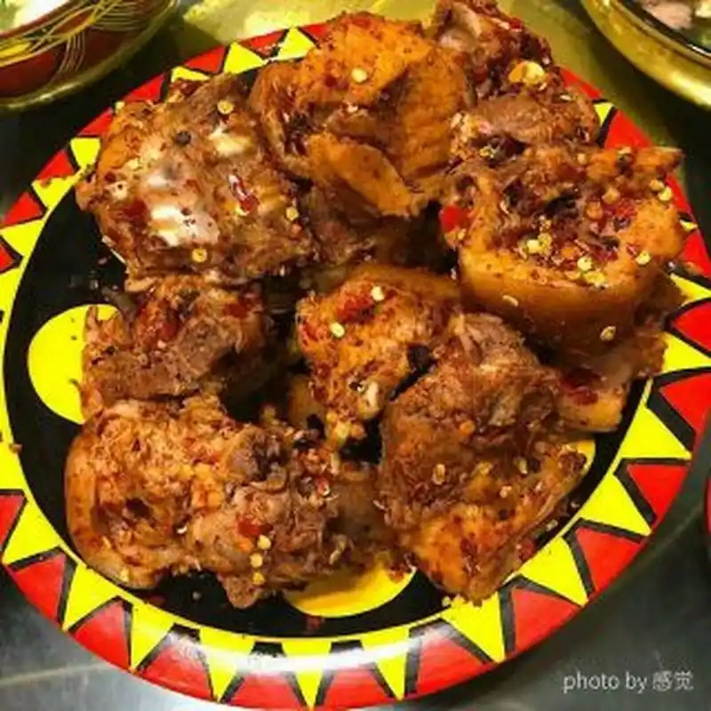
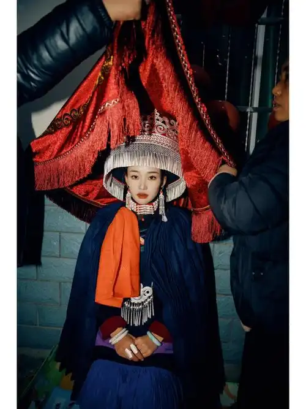

节日庆典
火把节
由来
彝族火把节由来有多种说法。一是源于对火的崇拜，古时火对彝族先民生存至关重要，为感恩和彰显火的神圣，便有了围绕火的庆祝活动，慢慢演变成火把节。二是纪念英雄黑体拉巴，他战胜作恶恶魔，人们燃火把欢庆、纪念他。还有说法是曾庄稼遇虫害，用火把驱虫后获丰收，为感恩并祈愿年年丰收， 就把这天定为火把节。这些传说让火把节蕴含深厚文化内涵，成为彝族极具特色且意义非凡的重要节日。
时间
农历六月二十四日（各地可能略有差异）



饮食文化

坨坨肉
主要原料：当地黑猪肉
制作方法：坨坨肉制作简单。先选优质的猪肉，一般带皮切成大块，每块约二三两重，形似坨状。接着冷水下锅， 加入适量姜片、花椒等佐料，大火烧开后转小火慢炖，直至肉熟软。捞出后撒上葱花、香菜等，坨坨肉便做好了，吃起来肉质鲜香，口感醇厚。
婚丧习俗
婚姻习俗
彝族有着独特且丰富的婚姻习俗。 说亲环节，男方请媒人带上酒等礼品前往女方家说媒，若女方家接受并饮酒，便算应允。之后定亲，商定彩礼等事宜。到了迎亲之日，男方迎亲队伍热闹前往，新娘身着精美传统服饰，盖着盖头被迎走。途中常遇“泼水”“抹黑脸”等有趣仪式，寓意祝福新人。 婚后，夫妻相互尊重、携手持家，遵循彝族传统的家庭伦理，敬长辈、爱晚辈，共同经营生活，在这些习俗里尽显彝族的文化韵味与民族特色。
